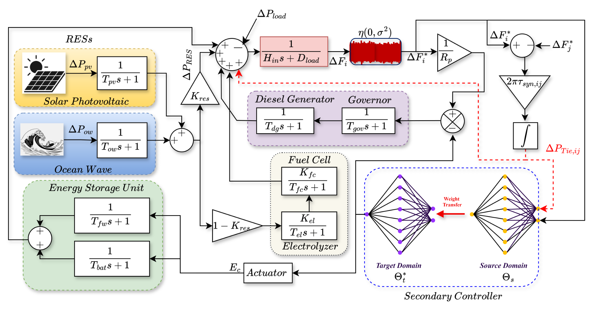
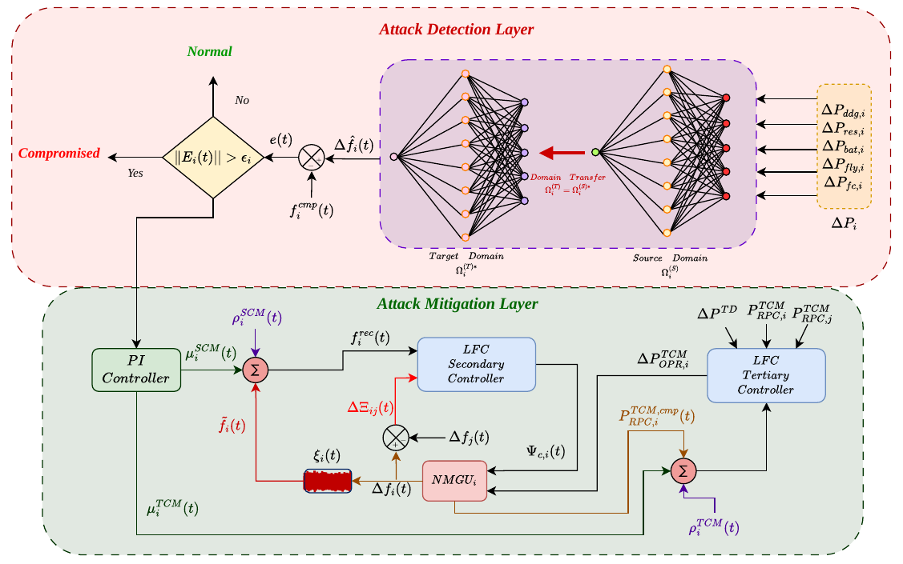
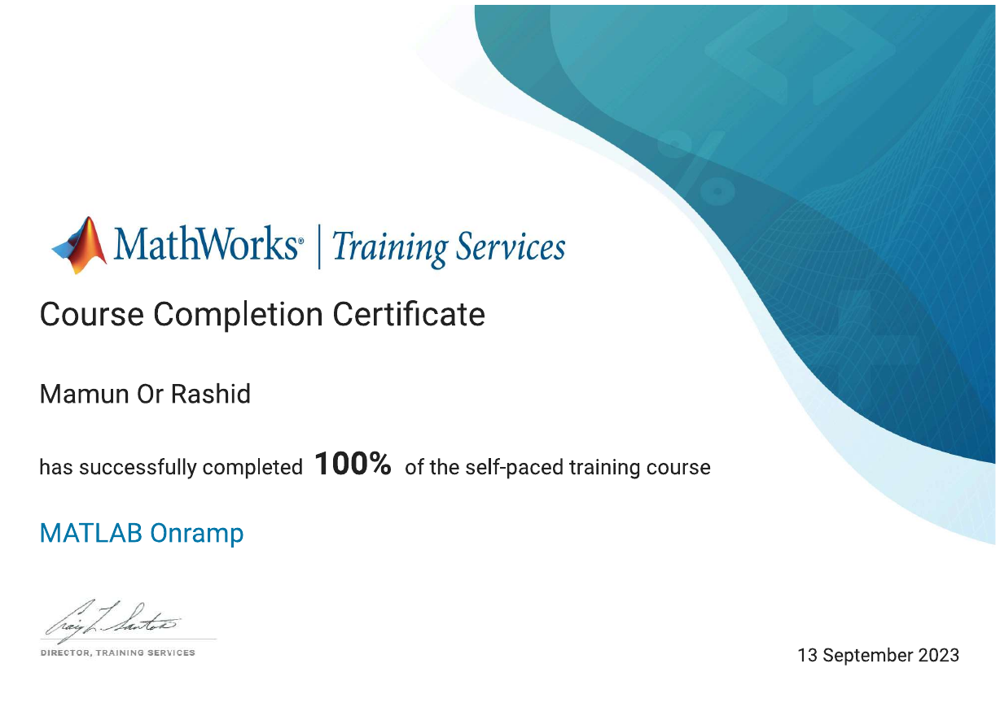
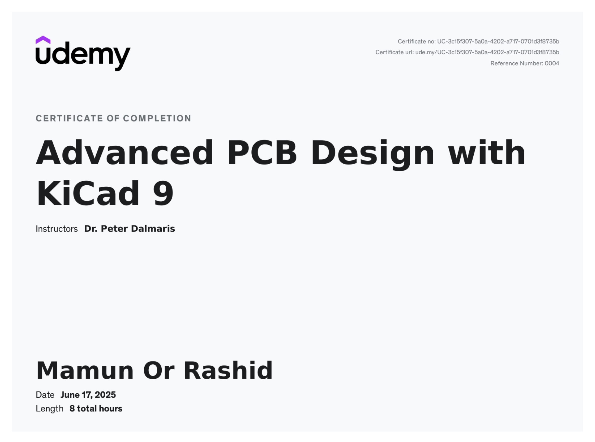
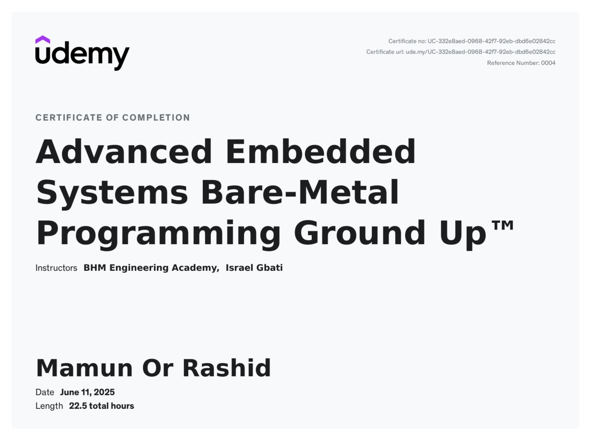
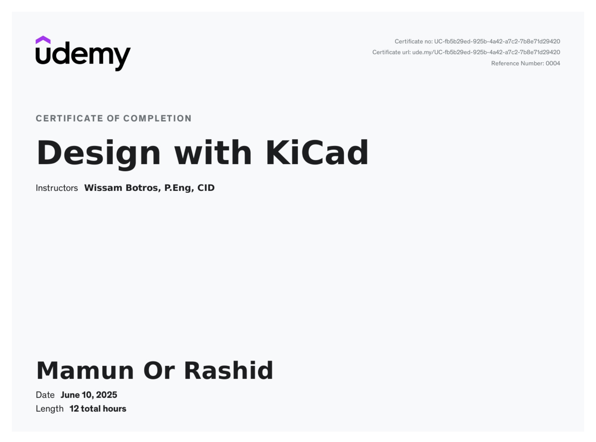

INTELLIGENT CONTROL · CYBER-RESILIENT ENERGY SYSTEMS
Mamun Or Rashid
I work at the intersection of machine learning, distributed control, and networked energy systems—with a focus on data-efficient and cyber-resilient microgrids.
ABOUT
Research at the intersection of learning, control, and energy systems
I am a final-year Mechatronics Engineering student at Rajshahi University of Engineering & Technology (RUET), working on intelligent and cyber-resilient control of networked energy systems.
My research focuses on data-efficient learning for microgrid control, particularly under limited data, communication noise, packet loss, and false data injection attacks. I use dynamic neural networks, transfer learning, and distributed control to study how learning-enabled controllers can remain effective when practical communication and data constraints challenge conventional data-driven approaches.
Beyond research, I lead electrical-system development for Formula SAE EV projects and work across power electronics, embedded systems, and PCB design. I am currently preparing for PhD study in intelligent control, smart grids, renewable energy systems, and cyber-physical energy systems.
Research & Computing
Python · MATLAB · Simulink · LaTeX
Machine Learning
Deep Learning · Transfer Learning · NARX · LSTM
Power & Control
Microgrids · Frequency Control · Power Electronics
Embedded & Hardware
STM32 · ESP32 · Arduino · KiCad · Altium
EDUCATION
Academic journey
2022 — 2026
BACHELOR OF SCIENCE
Mechatronics Engineering
Rajshahi University of Engineering & Technology (RUET)
Rajshahi, Bangladesh · Expected July 20263.89 / 4.00CGPA2nd of 58Class rank
2017 — 2020
HIGHER SECONDARY CERTIFICATE · SCIENCE
Susang Government Mahabidyalaya
Durgapur, Netrakona
5.00 / 5.00GPA
2015 — 2017
SECONDARY SCHOOL CERTIFICATE · SCIENCE
Gujirkona High School
Durgapur, Netrakona
5.00 / 5.00GPA
RESEARCH IDENTITY
Research focus
Data-Efficient Intelligent Control
Dynamic neural networks and transfer learning for frequency regulation under limited and noisy data.
Cyber-Resilient Microgrids
Distributed detection and real-time mitigation of false data injection attacks in communication-based control layers.
Renewable Energy & Power Electronics
Microgrid frequency resilience and high-efficiency transformerless photovoltaic inverter systems.
SELECTED RESEARCH
Building resilient energy systems with learning and control
Data-Efficient Intelligent Control of Multi-Microgrids
A domain adaptation-aided intelligent distributed control framework for enhancing frequency resilience when target-domain measurements are noisy and high-quality training data are limited.
Clean source data→Source DNN→Knowledge transfer→Limited + noisy target data→Distributed control

Challenge
Data-driven frequency controllers can degrade when operating conditions change or high-fidelity target-domain data are scarce.
Approach
A two-phase adaptation strategy first freezes source input-to-hidden weights, then fine-tunes the complete network using limited noisy target samples.
Validation
Evaluated on a two-area interconnected load-frequency-control model of multi-microgrids, with real-time validation on OPAL-RT OP5700.
Cyber-Resilient Frequency Control of Networked Microgrids
A fully distributed, data-driven attack detection and mitigation framework for communication-dependent microgrid control under false data injection attacks, composite noise, packet loss, and limited training data.
Local measurements→DNN estimation→Residual detection→PI reconstruction→Real-time mitigation
86.2%up to reduction in frequency nadir deviation*
93.8%reduction in settling time*
>99%IAE / ITAE improvement*
*Reported for the representative LSTM comparison under the identical constant-attack scenario evaluated in the ongoing manuscript.

SCHOLARLY OUTPUT
Publications
PEER-REVIEWED JOURNAL · 2026
DOI ↗
Domain-guided Intelligent Distributed Control for Enhancing Frequency Resilience in Multi-Microgrids under Limited and Noisy Data
M. O. Rashid, M. O. Islam, S. Billah, S. Tasnim, and S. K. Sarker
Energy Conversion and Management: X, 30, 101896.
PEER-REVIEWED CONFERENCE · 2025
DOI ↗
An Optimized Switching Scheme to Reduce the Leakage Current and Power Loss of Transformerless Inverter
S. Mondal, M. O. Rashid, S. P. Biswas, and M. R. Islam
2025 IEEE International Conference on Mechatronics (ICM), Wollongong, Australia.
MANUSCRIPT IN PREPARATION
In preparation
Enhancing Cyber-resilient Frequency Control of Isolated Microgrids Under Composite Noise: A Collaborative Learning-Based Distributed Framework
M. O. Rashid, T. Sultana, M. O. Islam, and S. K. Sarker
LEADERSHIP
Engineering beyond the laboratory
2025 — PRESENT
Head of Electrical
Team Crack Platoon
Leading a 20-member electrical division across high-voltage, low-voltage, data acquisition, and embedded systems for an international-class Formula SAE electric vehicle.
2023 — 2025
Chief of Data Acquisition Systems
BSPD development, APPS signal validation, LV power distribution, and ESF/FMEA documentation.
2024
Formula Bharat
15th overall static result · EV Class.
2025
Formula SAE Japan
18th overall ranking · EV Class.
ENGINEERING WORK
Selected projects
BSPD / PCB imageAdd image in assets/images/projects/
FORMULA SAE EV SAFETY
Brake System Plausibility Device
Designed a standalone analog BSPD integrating signal conditioning, fault detection, timing logic, and shutdown control on a custom KiCad PCB.
GitHubConverter / PCB imageAdd image in assets/images/projects/
POWER ELECTRONICS
Low-EMI Synchronous Step-Down Converter
Developed a 4-layer low-EMI synchronous step-down converter using the LMQ61460-Q1 for 26 V to 5 V conversion at 6 A.
GitHubPrototype / dashboard imageAdd image in assets/images/projects/
EMBEDDED & IoT
Remote Patient Health Monitoring System
Developed an ESP32-based IoT monitoring system integrating DHT11 and MAX30100 sensors with real-time remote visualization through Blynk.
GitHubPCB layout imageAdd image in assets/images/projects/
PCB DESIGN
Arduino Nano V3 Clone in KiCad
Recreated the Arduino Nano V3 PCB using custom nets, net classes, routing constraints, and a multi-layer KiCad workflow with FreeRouting.
Motor / control setup imageAdd image in assets/images/projects/
CONTROL & POWER ELECTRONICS
DC Motor Construction and Speed Control
Constructed a DC motor and implemented PID-based speed regulation using Arduino and PWM generation.
Robotic arm imageAdd image in assets/images/projects/
ROBOTICS
Industrial Robotic Arm Prototype for Fault Detection
Developed a 3-DoF Arduino-based robotic arm prototype using an IR sensor for simple fault-detection tasks.
Circuit / prototype imageAdd image in assets/images/projects/
ANALOG ELECTRONICS
Ultrasonic Rat Repellent
Configured an NE555 timer as an astable multivibrator to generate ultrasonic-frequency signals.
Code / terminal imageAdd image in assets/images/projects/
C PROGRAMMING
Credit Card Number Validation Using Luhn Algorithm
Implemented a command-line checksum validation system in C using the Luhn algorithm.
GitHubApplication screenshotAdd image in assets/images/projects/
SOFTWARE ENGINEERING
Integrated Hall Management System
Developed a C-based tool for organizing and managing information of students living in residential halls.
RECOGNITION
Honors & awards
Student of the Year Award
Department of Mechatronics Engineering, RUET
Technical Scholarship
Outstanding academic performance for four consecutive academic years
Formula SAE Japan
18th overall ranking · EV Class
International Rover Design Challenge
Semi-Finalist · Team Ogrodoot
Formula Bharat
15th overall static result · EV Class
TECHNICAL ENGAGEMENT
Technical session
Driving Innovation: EV Motors and Drivers for Formula Student Applications
Delivered an interactive technical session during Team Crack Platoon Recruitment 5.0 on EV motor types, performance-based motor selection, and race-vehicle integration.
Technical session imageAdd the event photo in assets/images/session/
PROFESSIONAL LEARNING
Selected certifications


PCB DESIGN
Advanced PCB Design with KiCad 9
Advanced PCB design and layout workflow using KiCad.
View certificate ↗
EMBEDDED SYSTEMS
Advanced Embedded Systems Bare-Metal Programming
Low-level embedded programming and bare-metal development concepts.
View certificate ↗
LET'S CONNECT
Interested in resilient, intelligent energy systems?
I am interested in PhD research opportunities in power systems, renewable energy, intelligent control, and data-efficient learning.
mamunorzrashid@gmail.com